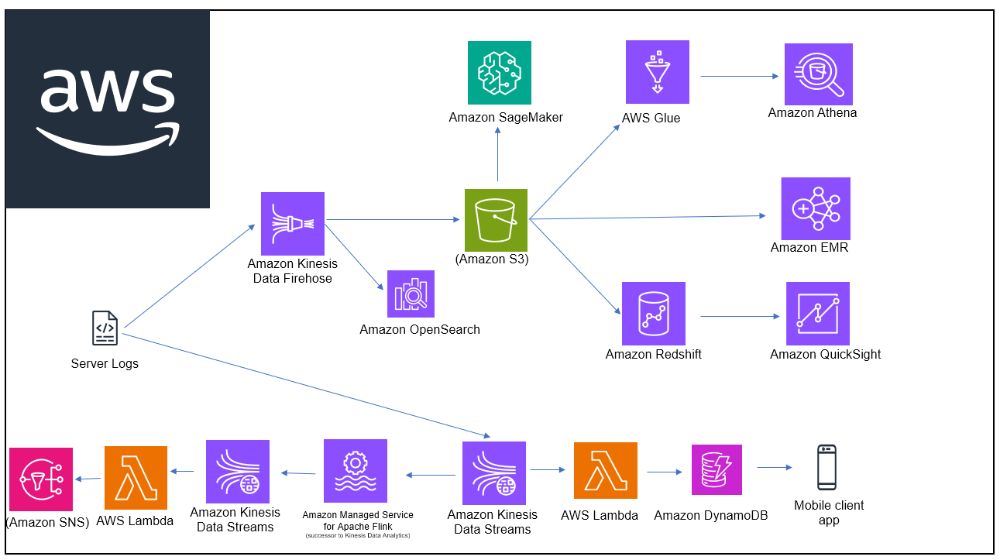
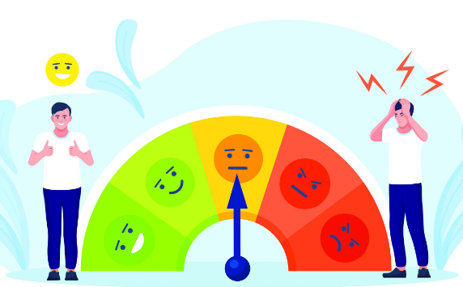
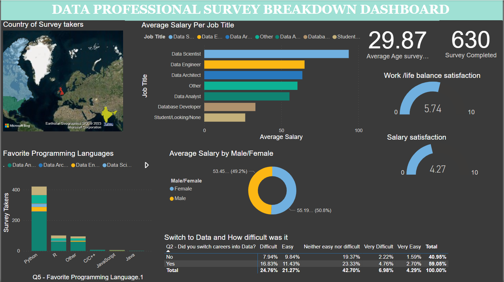
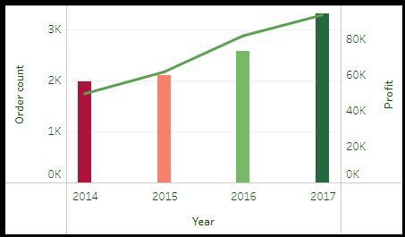

Cadabra Ecommerce Analytics and ML solution on AWS.
Order History Service: Enable seamless access to order history directly from the cadabra mobile application.
Log Analysis in Near Real-Time:Implement a robust log analysis system for real-time
Recommender System and Notification Service: Develop a recommender system for personalized user experiences.
Data Warehouse and visualization Requirements:Establish a data warehouse to manage diverse datasets.
Utilize AWS quicksight for in-depth data analysis.
Regression, Using closed form,
gradient descent SDG optimization,
softmax regression with augmented features,
One vs Rest support vector machines,
Multiclass SVM, Radial Basis Function SVM,
polynomial Kernel,
cubic transformation
Numpy, scipy, Scikit-Learn
in PART 2: feed foward Neural Network
convolutional neural network using pytorch.

Perceptron, Average perceptron and Pegassus.
Tools: Python, Numpy and Scipy

In this project we cleaned housing data in MySQL

In this project we explored COVID-19 data around the world, by country and by continent.

In this project, We analyze the data of a Bike share service to find useful insight about how casual users
use the service differently from user with a membership. The results would be use as base for
a marketing program

In this project cleaned (PowerQuery) analyzed and created a Dasboard (PowerBI) the data collected from the data profesional survey run by Alex freberg,
to provide an overview of the data careers. How do people get into the field, what they like about it and what tools do they use the most.

Imagine A superstore which at the end of a period they want an overview about how the business have been doing, sales,
best geographic area, top products, top sellers , top clients segment etc. We were given some KPI around which we build a dashboard
as support for a report and let them know how things are going.
this project we created a dashboard to generate insights for the superstore about sales performances
over 4 years (2014-2017)